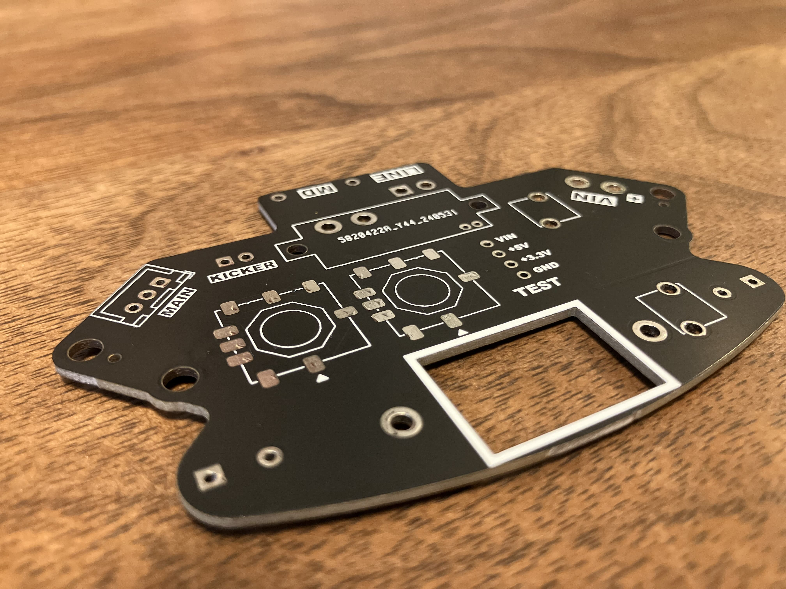
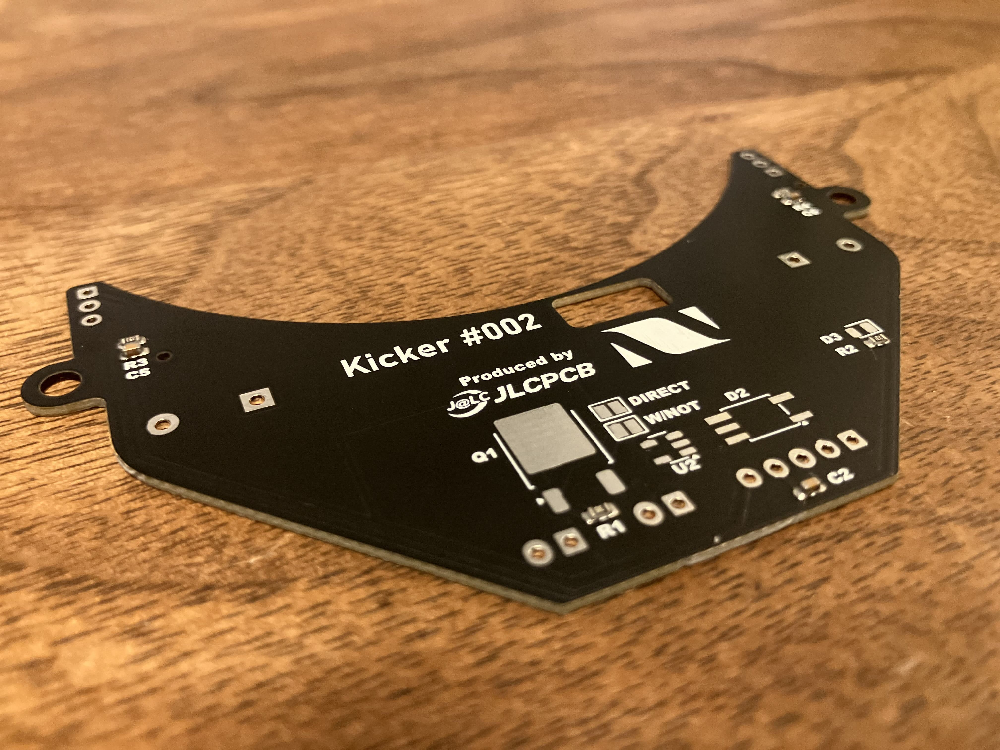
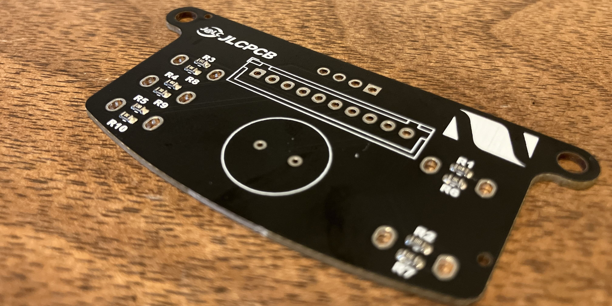

TOINIOT² Blog
基板！
2024-06-09 Writer: 010
こんにちは。今回の記事はJLCPCB様にまたまた基板発注をさせてもらったお話。
いやその話何回目やねんと思った方、まあそう言わず付き合ってください（笑）それだけJLCPCB様には本当にお世話になっています。たぶん、というか絶対に彼らのサポートがなければRCJ出れてないです。
全部自作基板とか感覚的には洗濯板を使っていた時代に戻るのと同じです。（←何言ってんのコイツ）
さて、ここでひとつ、そんな感謝せずにはいられないJLCPCB様について紹介させてください。
JLCPCBは主に基板製作を手掛けている会社です。しかし、それだけではなく、3DプリントやCNC加工なども行っており、彼らに作れないものはない！と言っても過言ではありません。
そして、JLCPCB最大の特徴は「安い」「早い」「正確」の3拍子がそろっていること。商品自体は１＄から発注可能、工場は海外にあるのに、空輸とはいえ発注から2週間かからずでの到着はかなり魅力的です。
しかもこの2週間とはあくまでも通常配達での話。速達サービスを使えば数日で届きます。1週間もかかりません。ここでもう一度言っておきます。出荷元は海外です！日本ではありません‼凄すぎ…
もちろん、確立された機械生産によって不良品に当たる可能性はほとんどなく、少なくても僕たちは一度も遭遇していません(僕たちの設計ミスはたくさんありましたが(笑))。今ならクーポンもゲットできるみたいです。
この機会をお見逃しなく！！

↓JLCPCB様のHP
https://jlcpcb.jp/
↓クーポンゲットのチャンス！
・新規ユーザー$60クーポン
https://jlcpcb.com/JPV
・その他のクーポン
https://jlcpcb.jp/coupon-center?from=6layer
紹介はこのあたりにして、頼ませていただいた基板について詳しく見ていこうと思います。今回は以下の3種類！
電源基板＆キッカー基板


あれれーおかしいぞーこの基板前にも…(殴)はい、設計ミスです(僕たちの)。すみません。見た目は特に変わっていませんし、詳しくは
こちらをご覧ください。
UI基板

ここからが本題、UI基板について。そう、ブザーとかがのってるあれです。一応今年から作り始めた基板です。ですがこの前の全国大会で試合前の待機時間にずーーーーーっとピーーーって鳴ってる落ち着きのないロボット
いませんでした？それが僕たちのチームロボットです(うるさかったと思います。すみません。来年はファミマの入店チャイムあたりにチャレンジするんでよろしくお願いします)。あとはスタートボタン押すだけだよー状態を示すために使っていました。
いやちょっと待て、ブザー思いっきり積んでるやん。何が今年初めてやねん。とツッコまれそうですが、実は去年はCPUがあるメイン基板の一部として組み込まれていました。それを今年は独立させたわけです。主な理由はRCJでUIにしっかりと取り組みたかったから。
そもそもRCJのサッカー競技においてUIは必須ではありません。なくても全然試合には出られます。しかし、音や映像といった視覚的、聴覚的な情報は人間の脳にしっかりと刻まれます。例えば、機体にトラブルが起きた後などは
テンパってスイッチを押し忘れるかもしれません。そのまま試合が始まれば、動き出すわけもなく故障扱いとなってしまいます。ではもしも先述のような音で機体の状態を見分けられる方法があったら…きっと途中で気づくことができるでしょう。
先ほどはUIは必須ではないといいましたが、ある意味一番大事なのかもしれません。それで「UI基板」を作ることになったわけです。ここまでその重要性の話をしてきましたが、やはりUIと名乗る以上はおしゃれなものにしたい！
僕たちには強い思いがありました。
そこで、JLCPCB様の登場です。回路の確実性は当然のごとく、こんな美しい漆黒の基板が手に入るなんて最高すぎませんか⁉自作基板では絶対に無理です。
ここまで読んでくれたそこのあなた、まずは一度JLCPCB様に基板を発注してみてください。その完成度の高さに感動すること間違いなし!
今回はここまで。ありがとうございました。